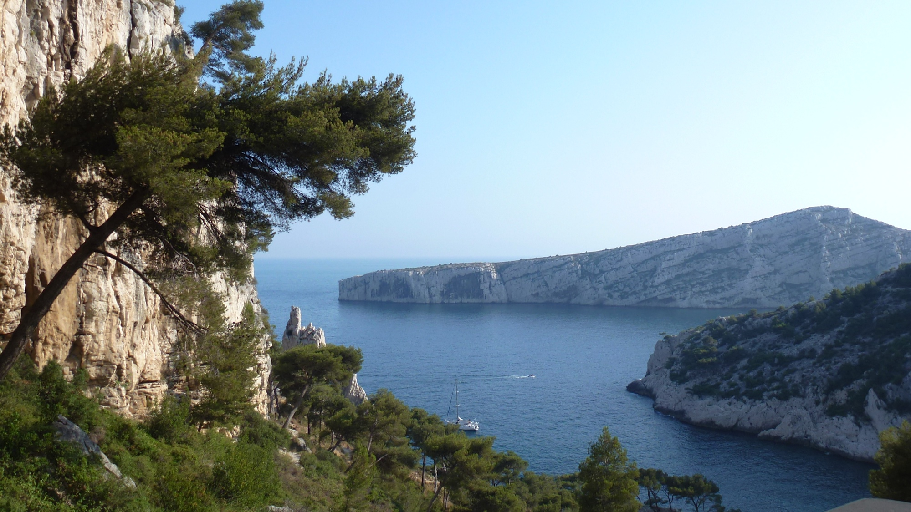

Main speakers
- Freddy Bouchet (ENS Lyon)
- Henk Bruin (Vienna)
- Juan Juan Cai (Delft)
- Davide Faranda (CEA, Gif-sur-Yvette)
- Stefano Galatolo (Pisa)
- Ivette Gomes* (Lisbon)
- Armelle Guillou (Strasbourg)
- Nicolai Haydn (Southern California)
- Mark Holland (Exeter)
- Juerg Huesler (Bern)
- Yuri Kifer (Hebrew Univ.)
- Natalia Markovich (Rus. Acad. Sci.)
- Thomas Mikosch (Copenhagen)
- Philippe Naveau (LSCE)
- Matthew Nicol* (Houston)
- Mark Pollicott (Warwick)
- Jérôme Rousseau (Bahia)
- Benoît Saussol (Brest)
- Johan Segers (Louvain-la-Neuve)
- Giorgio Turchetti (Bologna)
*Special introductory talks.
|
|

| Scientific Committee |
Organisers |
- P. Collet (École Polytechnique)
- Michael Ghil (UCLA/ENS Paris)
- Ivette Gomes (Lisbon)
- Valerio Lucarini (Hamburg)
- Matthew Nicol (Houston)
- Holger Rootzén (Chalmers)
|
- Ana Cristina Freitas (Porto)
- Jorge Freitas (Porto)
- Mike Todd (St Andrews)
- Sandro Vaienti (Toulon/Marseille)
|
|